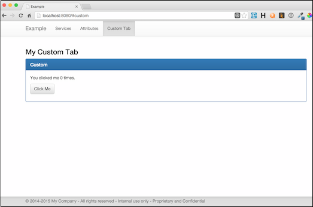

The example consists of 5 separate applications:
You will run 1 instance of mock-database and mock-zookeeper. Run one or more versions of goodbye and hello. Lastly, run one instance of admin.
From the soabase directory (assuming a *nix system):
# Run the mock database in the background java -jar ./target/mock-database.jar & # Run the mock zookeeper in the background java -jar ./target/mock-zookeeper.jar & # Run any number instances of the goodbye app in the background java -jar ./target/goodbye.jar & java -jar ./target/goodbye.jar & # Run any number instances hello app in the background java -jar ./target/hello.jar & java -jar ./target/hello.jar & # Run the admin app in the background java -jar ./target/admin.jar &
When the goodbye and hello apps start, they will write their ports to the console. Write down the admin ports as they are needed in the examples below.
Open the main page in a browser: http://localhost:8080. You will see the main admin console page:

From this screen you will see all registered instances. For each instance:
Click on "Attributes" to see the attributes screen. This screen shows the Soabase global dynamic attributes. In this example, the attributes are stored in an in-memory database. In a production environment, you'd store them in a Mysql database, AWS storage, etc.

You should see three attributes. The example hard codes these values when the mock-database starts. Notice that the attribute "test" has no scope. This means that all instances will see the same value. Notice that the attribute "test2" is different for scopes "goodbye" and "hello". This means that the hello and goodbye apps will see different values. You can see this by using curl:
curl http://localhost:HelloAdminPort/api/soa/attributes/test curl http://localhost:GoodbyeAdminPort/api/soa/attributes/test curl http://localhost:HelloAdminPort/api/soa/attributes/test2 curl http://localhost:GoodbyeAdminPort/api/soa/attributes/test2
You'll see that the result for "test" is the same for hello and goodbye, but "test2" is different.
From the attributes screen, you can create, update and delete attributes and scopes. Try various changes and curl to see the affect on the example applications.
The administration console supports custom tabs with any content you like. Click on "Custom Tab" to see an example.
